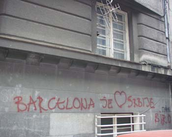

Arhipelag Evropa
U tekstu "Archipelago Europe" pisac Karl Schlogel piše o svakodnevici Evrope nastale nakon 1989. godine. Tekst je odlomak knjige, a opet veoma opširan, te iako je u full verziji za svaku preporuku, ja ću da ga ovde prezentiram u kraćim crtama.
Elem,
Kao određujuće elemente slike današnje ujedinjene Evrope on, između ostalog, navodi:
Roterdam, 'the mouth of Europe'.
Hitrou. Kosmopolitanizam koji se vežba dok ne postane druga priroda.
Kupači u termalnoj banji hotela Gellert u Budimpešti. Na verandi hotela, brdo Buda je ispred vas, grad iza; uživate u izvorima a ipak ste u centru metropole.
Benzinske pumpe. "It is the signature of the newly mobile Eastern Europe. The new Europe is mobile."
Ikea.
Brzi putevi.
Kijev. na obodu Evrope pojavljuju se zlatne kupole.
Evropa na plaži. Evropa se određuje prema godišnjim odmorima. Tokom njih, redovne aktivnosti s eprekidaju na nekoliko nedelja.
Evropa na točkovima.
Umetničke strane. Novi gradovi, oni sa istoka, pojavili su se na kulturnim stranama vodećih evropskih novina.
Bankomat na Univerzitetu u Sofiji.
Vetrom nošene naslage smeća - pogled iz noćnog voza Sofija-Bukurešt.
Eurolille. Tunel ispo Lamanša, koji je Pariz i London učinio susedima, pretvorio je Eurolille u usputnu stanicu, ali i mesto za izlet. Na sličan način su i ranije u Evropi nastajali novi gradovi: Kad se sagradi novi most, otvori prolaz kroz planinu, napravi nova ruta karavana. Nakon 1989. nastali su i ovi novi gradovi: Narva (na estonsko-ruskoj granici), Kalvarija (na granici Litvanije i Poljske), Ruse (kod mosta preko Dunava koji spaja Rumuniju i Bugarsku), Rostov-on-Don (na novoj ruskoj južnoj granici), i kontejner gradovi na finsko-ruskoj granici.
Love Parade. Dionis je ponovo u gradu.
Planeta Moskva. Frenetičnosti gradnje u Moskvi jedino može da parira frenetičnost rušenja u Moskvi.
Berlin. Evropsko poprište zabave. "There is enough of everything: streets, parks, lakes, living space, footpaths, pubs, street cafes, space between the houses. There are three opera houses, three first-class symphony orchestras, several first-class theatres, museums in abundance. The air has become better since factories have closed down. Berlin is no longer an industrial city. The city is still busy filling the empty spaces produced by a regime, a war, and a long period of division."
Antropologija Brisela. Ko god da je živeo u Briselu, iz njega odlazi kao promenjena osoba. 'Brussels is Europe in miniature.'
Ženeva. Mreža međunarodnih odnosa. Njen razlog postojanja je, čini se, u tome da organizuje lokaciju za medijaciju.
Studiranje u inostranstvu. Barem godinu dana. Programi Erasmus i Socrates omogućavaju to skoro svima.
Autobuska linija Napulj-Kijev.
Novi reperi. Neboderi na Potsdamer Platzu. Kule u centru Varšave koje treba da sakriju Staljinov Palatu kulture.
I na kraju, kao kontrast:
"Black hole Belarus. There are places that have dropped out of the new Europe. They have lost time and strength. They are big, important, once vibrant cities, which, as a result of hate, self-imposed isolation, and finally war, have wasted away. Belgrade is a case in point, a city, once a gathering place for Europe, no longer recognisable."
***
Da dodam i sama nešto:
Skvotirane građevine u Ljubljani.
Dva strana univerziteta u albanskom selu kod Skoplja.
VIP parking mesto ispred tržnog centra u Oradei, Rumunija.
Slobodno vreme i vikendi provedeni u tržnim centrima u gradovima širom istočne Evrope.
Projekat učenje jezika u javnom prevozu.
Izraz i koncept Eurotrash.
***
Šta su za vas slikoviti i bitni momenti Evrope?
 RSS feed
RSS feed
 sadržaji se objavljuju pod
sadržaji se objavljuju pod
Komentari
Evropa=backpacking, hosteli i vozovi.
elektrokuhinja | 05.11.07 19:33
Evropa = Wenders, Liga šampiona, Evrovizija :)
ljube | 06.11.07 20:36
Moskva je daleko od Evrope. Piter mozda ali ne i Moskva.
Tacna je ova izjava za rusenje i gradjenje. Kada sa aerodroma ides MKADom (spoljni saobracajni prsten oko Moskve)samo mozes da vidis nacickane dizalice i kranove. izgleda potpuno nestvarno. i malo jezivo :)
nikada rusima nije bio problem da nesto sruse da bi nesto drugo sagradili. nazalost.
what the fuck | 07.11.07 07:43
Dobro, on je očigledno postavio stvari geografski, a ne vrednosno, u svakom slučaju zanimljiva mi je ta razlika koju ti vidis izmedju St. Petersburga i Moskve. Jel' bi mogla da malo pojasniš? Misliš na arhitekturu i urbanizam, ili nešto drugo?
La Lara | 07.11.07 11:24
Mislim i na arhitekturu, ali i na kulturu ljudi. U Piteru su ljudi ljubaziji, mirniji, oblace se drugacije, znaju jezike - francuski, engleski, italijanski, pomoci ce ti na ulici ako ih nesto pitas, u Moskvi je to retkost. Grad je cistiji, gradi se u duhu arhitekture grada, nema za sada visokih zgrada kao sto ih ima u Moskvi i kakvih ce tek da bude. Ne znam, takav sam ja utisak stekla, iako sam bila jako kratko. Moskva je dzungla, a Piter je ipak carski grad :)
what the fuck | 07.11.07 11:41
Super zvuci to za St. P. Mozda im Moskva sluzi kao izlog moći, a Petrograd može kako hoće:)
La Lara | 07.11.07 11:46
Dugo vremena je P. bio prestolnica, a sada je Moskva, i oduvek je postojao taj neki rivalitet izmedju ljudi ta dva grada. Moskva ima 17 miliona ljudi a P. 6 miliona. I svi hoce u Moskvu, valjda je to prokletstvo velikih gradova. Nema milosti :)
A i geografski polozaj Pitera u odnosu na M. je blizi Evropi pa od tuda i taj evropski uticaji.
Pih! ala sam ga srocila ;)
what the fuck | 07.11.07 12:20
Pa i jesi:)
La Lara | 07.11.07 12:26
Meni se ne svidja kako je pomenut Bg, sta prica gluposti taj lik? Also, sad mi se ide u St. P.
feisty | 08.11.07 17:41
Pretpostavljam da nije bio ovde bas tako skoro. Ali meni to ne kvari utisak celog teksta. Inace, kad razmislim, meni je najupecatljivije za Evropu to sto dva- tri sata kolima ili avionom na bilo koju stranu donose nesto totalno drugacije. Evo npr. Temisvar. Tri sata voznje, i sve je, mislim na ljude i navike, POTPUNO razlicito.
la lara | 08.11.07 18:11
Meni je najupecatljivije za Evropu sto nije Amerika.
Feisty | 09.11.07 00:12